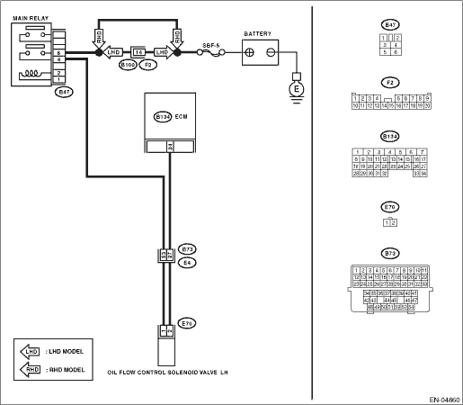

DTC DETECTING CONDITION:
Immediately at fault recognition
TROUBLE SYMPTOM:
Improper idling
CAUTION:
After repairing or replacing the defective part, perform the Clear Memory Mode  and Inspection Mode .
and Inspection Mode .
WIRING DIAGRAM:


| STEP | CHECK | YES | NO |
|
Is the voltage 10 V or more? |
|
Repair the open circuit of harness between the oil flow control solenoid valve and main relay. |
|
|
Is the resistance 1 MΩ or more? |
|
Repair the short circuit between ECM and oil flow control solenoid valve connector. |
|
|
Is the resistance between 6 — 12 Ω? |
Repair the poor contact of ECM and oil flow control solenoid valve. |
Replace the oil flow control solenoid valve. |